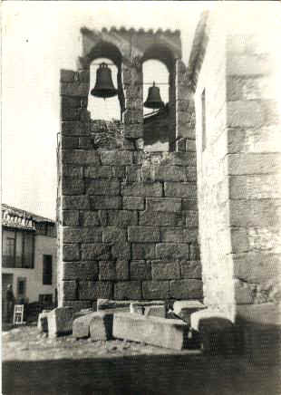
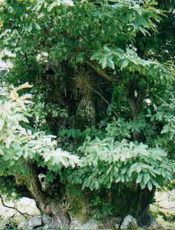

|

-
Vettones
-
Romanos
-
Visigodos
-
Musulmanes
-
Cristianos
-
Evolución
-
Apellidos
-
Siglo
XVIII
Siglo
XIX Siglo
XX
 |
La
historia de Casas del Monte no se comprende sin antes dedicarle unas
palabras a todos aquellos pueblos que pasaron por aquí y que dejaron
sus huellas en muchos lugares de los alrededores de la localidad. |
|
Para
comenzar decir que los primeros que habitaron estas tierras, y que
dejaron constancia de ello, fueron los Vettones.
Es un pueblo bélico por naturaleza cuya vida depende principalmente
de los rebaños de ganado, de ahí que sus esculturas más famosas
eran dedicadas precisamente a los verracos (toro de Segura). |
|
Posteriormente,
después de mucho guerrear con los que aquí vivían, llegó el
pueblo Romano del que nos quedan bastantes restos
de su presencia como son los de la Granjuela, en la que se ha
encontrado un mausoleo octagonal del siglo IV al lado de las ruinas de
la villa romana. En Piedras
Labradas, ya en término de Jarilla, hay
restos de lo que fue un templo romano, que los lugareños atribuyen a
un castillo que no se llegó a construir o una ermita. En Piedras
Labradas, ya en término de Jarilla, hay
restos de lo que fue un templo romano, que los lugareños atribuyen a
un castillo que no se llegó a construir o una ermita. |
|
Una vez
Roma cayó en manos de los bárbaros, llegaron a estas lindes los visigodos,
pueblo que no aportó nada comparado con Roma, y si pasaron por aquí
no han dejado huellas que lo demuestren. los visigodos,
pueblo que no aportó nada comparado con Roma, y si pasaron por aquí
no han dejado huellas que lo demuestren. |
| Con la
invasión musulmana en el 711 llegaron nuevos
pobladores a la Península, pero que por desgracia no se asentaron por
esta zona. Si estuvo por aquí el pueblo Bereber, pero
este se caracterizaba por ser nómada y por tanto no se crearon
asentamientos de importancia. Quizás Granadilla fue el único que
fundaron. |
|
Cuando
Alfonso VIII fundó Plasencia, al volver
hacia el norte, mandó construir los asentamientos militares, en un
principio, de la Oliva y de Segura, formándose
así el primer núcleo poblado cercano a lo que es hoy Casas del
Monte, sin duda fueron gentes de este vecino lugar y otros llegados de
pueblos cercanos los que se establecieron por primera vez en lo que
es hoy el pueblo. Según la tradición oral los primeros que se
asentaron fueron unos vaqueros de La Garganta, que construyeron unas
cabañas situadas en el Barrio Hondón de hoy en día. |
|
Poco a
poco se fueron incorporando más habitantes
al pueblo, seguramente de los pueblos de alrededor (Segura,
Gargantilla, Jarilla...) y también por qué no de los pastores que
continuamente pasaban por el cordel y que optaron por establecerse
aquí. Estamos hablando de aproximadamente, entre 1450 y 1490, la fecha
de fundación de Casas del Monte, concretar
es imposible hoy por hoy. Si podemos decir que en 1580
se construyó la iglesia sobre lo que anteriormente era una ermita
dedicada a los Mártires San Fabián y San Sebastián. Los primeros
registros bautismales se produjeron en 1619, compartiendo libro con
Segura. La población fue aumentando poco a poco con nuevas
incorporaciones de inmigrantes ahora procedentes de los pueblos de los
alrededores de Béjar. |
|
Como
curiosidad y por si a alguien le interesa, vamos a poner una lista con
la fecha en la que se bautizó el primero con un apellido
determinado, algunos se han perdido y otros no tienen que ver con los
actuales, pero si podemos decir que los más característicos son
totalmente fiables. El periodo va desde 1619 hasta 1778. |
|
|
Alonso
Blanco
Campo
Chamorro
Chapa
Corrales
Díaz
Granado
García
Gómez
Hernández
Leal
Hoyo
López
Matas
Martín
Núñez
Pantaleón
Redondo
Rojo
Sánchez
Villares |
1693
1626
1619
1701
1769
1708
1756
1766
1619
1646
1624
1769
1691
1685
1758
1619
1720
1777
1732
1626
1619
1627 |
Barroso
Bueno
Castaño
Carrero
Chorro
Corredor
Delgado
Freita
Gil
González
Lobero
Izquierdo
Lancha
Morales
Luengo
Muñoz
Pascual
Pérez
Ramos
Ruiz
Valle
Toribio |
1718
1739
1732
1716
1670
1716
1625
1704
1626
1627
1743
1749
1719
1734
1726
1619
1710
1619
1665
1721
1672
1758 |
| En 1753
habitaban el
pueblo 119 vecinos, lo que supone unas 500 personas, en 1791 ya había
160 subiendo la población hasta unas 640 almas. Vivían de la
agricultura y de la ganadería, como prácticamente toda España, en
tierras del Rey de turno, o sea realengo. Las tierras que explotaban
eran la Dehesa de la Granjuela propiedad del Obispado de Plasencia al
que tenían que pagar los correspondientes diezmos. Esta dehesa era
pastada, sembrada de trigo, centeno, cebada y sobre todo lino.
Huertos alrededor del pueblo cuya propiedad era de los propios
vecinos de Casas del Monte, los cuales estaban sembrados de olivos,
nogales, morales, hortalizas en verano y toda clase de árboles
frutales, además de los prados para el ganado. La dehesa Boyal era
partible con los de Segura y correspondía a lo que hoy es la zona de
la Dehesa y Dehesa de Peña Alta. Queda todo el terreno
correspondiente a la sierra, del pueblo para arriba, perteneciente al
alfoz de Plasencia o tierras de esta ciudad, esto suponía que
cualquiera podía pastar en las sierras, no sólo los del pueblo. |
| Llegaron los franceses
a principios del siglo XIX, Aldeanueva del 
Camino fue saqueada y El Torno quemado y arrasado, como es normal la
gente huyó a refugiarse a la sierra, acampando debajo del castaño de
la Escarpia nombre que le viene desde que ocurrió este
acontecimiento. El motivo de este nombre es debido a que de sus ramas
colgaban una infinidad de escarpias y de estas todos los utensilios
que habían subido durante la huida. |
| En 1860 el pueblo  establece
la Dehesa Sociedad y pasa a ser propietario de la sierra, quedando la
parte alta de esta en manos del ayuntamiento, esta llamada ahora
Dehesa Boyal. establece
la Dehesa Sociedad y pasa a ser propietario de la sierra, quedando la
parte alta de esta en manos del ayuntamiento, esta llamada ahora
Dehesa Boyal. |
| En 1875 llegó el
ferrocarril, dándole impulso y vida al pueblo. |
| 1936 estalla la Guerra
Civil y quedamos dentro de la zona nacional, no sufrió prácticamente
nada, tan solo las bajas de aquellos que fueron al frente. Lo peor
vino después, durante la posguerra cuando eran requisados el aceite,
granos, y todo lo que sirviese para el sustento de una España en
ruinas. El que más y el que menos se las ingeniaba para esconder lo
que podía y evitar así que se lo quitasen. |
| Años 50 y 60 la emigración
sacude fuertemente, solo los altos índices de natalidad mantienen el
número de habitantes. En la década de los 70 llegó el oro rojo, la
fresa, fue una década en que muchos de los que se fueron volvieron
ante tanta abundancia. El kilo se vendía a 50 pesetas y el jornal se
pagaba a 250 pesetas, echen cuentas. En los 80 y 90 se remoza el
pueblo con las construcciones de consultorio médico, escuelas, hogar
del pensionista, residencia de ancianos, piscina natural, albergue,
polideportivo, etc... |
|
|